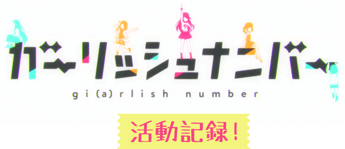

話題作！TVアニメ『九龍覇王と千年皇女』
ヒロイン達を演じる烏丸千歳、
久我山八重、片倉 京インタビュー公開！
第1話から様々な方面で話題沸騰中のTVアニメ『九龍覇王と千年皇女（ルビ：ミレニアムスレイブ）』（以下『クースレ』）に出演中の烏丸千歳さん、久我山八重さん、片倉 京さんの3人に放送開始後の現在の心境を語っていただきました！
――TVアニメ『九龍覇王と千年皇女（略称：クースレ）』でメインキャラクターを演じられてのご感想を伺えますか
千歳 「初めての経験ばかりで、よい勉強になりました。今でも夢のなかにいるような気分で、なんなら全部夢だったらよかったのにって思うこともありま す……。いろいろイヤなこともあったけど、それもこれもすべてを踏み台にしていろんな反省点を生かして、まったく新しい烏丸千歳少し成長したユウナになれれっていればいいなって思っています」
八重 「あの！ 本当にほんとうに、うれしくて楽しかったです！ でも、いろんな方にご迷惑をかけてしまったところもあるかなって思います……。やっぱりオンエアを観てるとへたっぴだなぁって感じるところもたくさんたくさんあって……。」
千歳 「八重、やめて。そのコメントはわたしに効く」
八重 「はわぁ！ ちーちゃんのことだけじゃないよぅ！」
千歳 「……だけ？ ん？ ちょっと？ やっぱりわたし入ってる？ ん？」
八重 「はわわ……」
京 「まぁまぁ、最初の方はやっぱりみんなあかんかったって。そういうことやんな？」
八重 「う、うん……えっと、その、だから、次のクールではもっともっと成長したお芝居をできるようにしたいなぁって思います。その、キャラクター達もその分、お話の中で成長していくのでっ！」
京 「振り返ってみると、うちも自分の未熟さばっかり目について……。ついつい目をそらしたくなる時もありますね、まぁ、いろんな意味で。けど、目をそらしても、自分の芝居が明らかにそのレベルに至ってないなぁって聞いててわかっちゃうんですよね。特に他キャラとの掛け合いとかはもっと距離感考えなあかんなぁと。……まぁ、アフレコと絵が変わってたりもするんで距離感ってなんやろかって悩んだりもするんですけど。」
千歳 「あー……なんか急に背景になったりしてたよね」
京 「うん……。いや、まぁ、みんな大変なんやなぁってすっごい思うわ……。せやから、うちももっと頑張ろうって。とにかく自分にできることをひとつひとつ積み上げていこうと思てます」
――『クースレ』アフレコ時の思い出深いエピソードがありましたら、教えていただけますか。
千歳 「ところであの、これって雑誌インタビューでしたっけ。お金払った人だけが読めるやつ……？」
八重 「ちーちゃん？」
京 「基本雑誌で、webにも一部アップされるて聞いたけど」
千歳 「web！ 配信！ 無制限！ 今なら実質無料で叩き放題！ メインジョブがサンドバッグなのはラノベ作家だけで充分だよ……。タンクもっと仕事して……たくさんの人に読んでもらえるんだ！ 嬉しいな！(笑)」
京 「ヒーラーおらんのに無茶言うなぁ……」
八重 「先生のライフはもうゼロだよぅ……」
千歳 「また……、また叩かれる……。わたしはワニでもモグラでもないわに……」
八重 「落ち着いて！ ちーちゃんは烏だよ！ いっつもかーかー可愛いよ！ かーかー！」
千歳 「八重は蝙蝠……」
八重 「ふぇっ！？」
京 「なんて感じでなっ！ 動物占いとか話したりすることもあったな！ な！」
八重 「どうぶつ、うらない？」
京 「知らんかー……。まぁ、せやな、若い子知らんよな……、うん……。まぁ、ええわ。話続けて」
千歳 「ううっ……、また叩かれるのはイヤだよ……アニメは心の優しい人だけ見られることにしようよ……」
八重 「ち、ちーちゃんダメだよぅ、そしたらちーちゃんも自分のアニメ観られなくなっちゃうよぅ……、せっかくだから雑誌で全文読んでもらった方が嬉しいよぅ(笑)」
千歳 「ん？ お？だよねー！ あはは(笑)」
京 「なーんて感じの！！ 冗談ばかり！ アフレコ中は言い合ってました！！ ほんと皆仲良くて！ あはは、あはは！！はぁ…… 」
――アイドル声優ユニット「ガーリッシュ ナンバー」のデビュー曲が好調ですが、今回、テーマ曲を歌唱されてのご感想を伺えますか。
八重 「私本来のが自分で聞いている声と、機械の力で流れるで録音して聞く声ってぜんぜん違うんだなって思って、そういうことがすごく面白かったです！」
千歳 「機械の力」
京 「機械な！ 通すとな！ 自分が思う自分の声とぜんぜん違てるように聞こえるもんな！ 骨伝導の問題でな！そういうこと言いたかったんやろ！？ 」
八重 「ふえ？ そうだけど……」
京 「あっはっは、もう、やえぽんはほんとに無邪気やなあ！」
千歳 「でも歌うのは面白かったよね」
八重 「うん！ またやりたいなって！」
千歳 「だよねー。今回テーマ曲を歌わせていただいて、市場に受け入れられて推定一万枚を出荷したことは確かな事実ですが、一万枚であっても一万枚におごることなく、この一万枚は一万枚として違う一万枚を作っていくことができたら一万枚の烏丸千歳としてもうれしいです本当に嬉しかったです。キャラクターとして歌わせていただくことってとっても新鮮で、またぜひこういう機会をいただけたらなと思います！皆さんにご恩返ししたいです！」
京 「……あー！あと！ 実はこのテーマ曲の歌詞って本編内容の象徴になっているのがよかったなって」
千歳 「あー、それね。わかるわかる。あれとかね。わかる。ほんとわかるー。わたしもそうじゃないかなって思ってた」
京 「な、なので、ぜひぜひクースレの原作本を読むときに流して聴いてもらえると、アニメではよくわからんかったこととか絵が追いついてなかったとこ、省略されてしまったとことかとリンクして、もっと深いところまで気に入ってもらえるんやないかなと思ってます」
――TVアニメ『クースレ』１クールが終了しましたが、後半クールへの意気込みをいただけますか。
京 「みんなとがんばります……」
八重 「みんなでがんばります！」
千歳 「みんなががんばります」
――最後に、お一人ずつ、今後のユニット活動への期待や希望をいただけますか。
八重 「ユニット活動、できればなにかの形で続けていきたいです。こういうふうにお仕事していると、友達じゃないのにまるで友達みたいだなって思ってて、あっ友達じゃないっていうか本当の友達じゃないって意味で、あっいえっ、学校時代からの友達じゃないのに仲良くなったみたいでているなって、すごくうれしいなって思うので！！」
京 「歌うことはアニメとはまた違って楽しいので、機会をいただけたらまたぜひやりたいと思ってます。イベントとかでみんなと盛り上がれたらなーって」
千歳 「イベント！ いいね！ 配信なしなら！ ていうか、わたし前から思ってたんですけど、声優活動とアイドル活動は切っても切り離せないというか、むしろわたしアイドルのほうが向いているまであるので、どんどんイベントとか呼んでいただけたらなって思います！目指せ、アニサマ！ 」
修正：烏丸悟浄